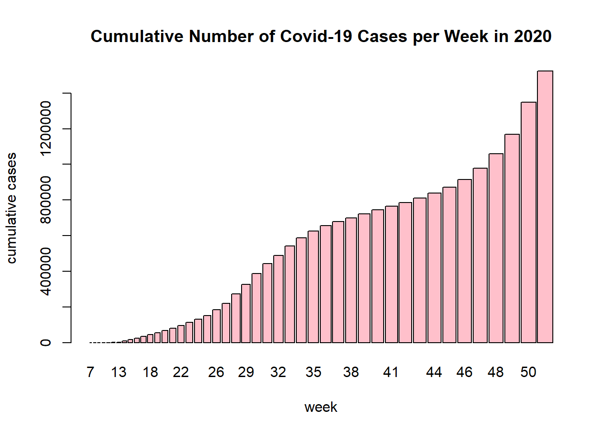
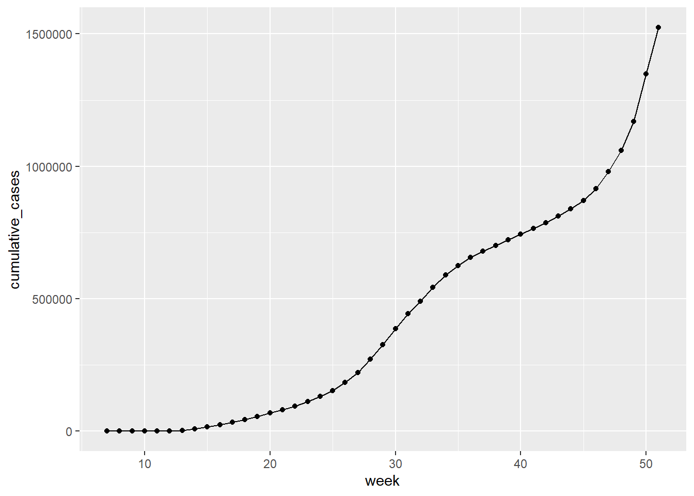

Using Machine Learning Models to Predict Covid-19 Outbreak Risk in Californian Cities
Author
Lyndsey Umsted
Introduction
This project is intended to build and deploy a machine learning classification model which categorizes California zip codes into low, moderate, or high risk for Covid-19 outbreaks by the end of the year of 2020. Risk predictions of Covid-19 were made using 30 different predictors including socioeconomic factors, abiotic factors such as temperature, and pollution indicators. This project originates from a personal interest in public health and previous studying done on disease dynamics.
Packages and Libraries:
library(corrplot) # for the correlation plot
corrplot 0.92 loaded
library(discrim) # for linear discriminant analysis
Loading required package: parsnip
library(corrr) # for calculating correlationlibrary(knitr) # to help with the knitting processlibrary(MASS) # to assist with the markdown processeslibrary(tidyverse) # using tidyverse and tidymodels for this project mostly
library(ggplot2) # for most of our visualizationstidymodels_prefer()
What is Covid-19?
Coronavirus disease (COVID-19) is an infectious disease caused by the SARS-CoV-2 virus. Most people infected with the virus will experience mild to moderate respiratory illness and recover without requiring special treatment. Some people become seriously ill and require medical attention. Older people and those with underlying medical conditions are more likely to develop serious illness and hospitalizaton. COVID-19 can affect people of all ages, including death. The virus can spread from an infected person’s mouth or nose in small liquid particles when they cough, sneeze, speak, sing or breathe. These particles range from larger respiratory droplets to smaller aerosols.
The data set used for this research project was provided to me by a faculty member, Dr. Andrew MacDonald, who I had the opportunity to work under this summer during an undergraduate research internship. Dr. MacDonald merged data from the LA Times on socioeconomic factors and food access for different Californian zip codes with data reflecting Covid-19 case counts, weather, and pollution levels from the same zip codes during the Covid-19 pandemic in 2020. The original data set contained 273 columns of data.
Research Questions
What factors of a population have underlying effects on the number of Covid-19 Cases?
What kinds of populations are at higher risk for Covid-19 outbreaks?
Is there evidence of socioeconomic correlation with higher Covid-19 rates?
Is there evidence of pollution level effects on Covid-19 rates?
Exploratory Data Analysis
The original data set used for this project contained 55,620 observations of 268 variables. In the beginning stages of this project, this data set was tidied, cleaned, and reduced to fewer variables. In the following sections we’ll explore the distribution of our response variable “outbreak risk” and look at visualizations of key predictor distributions and relationships between predictors and case counts of Covid-19.
Loading and Exploring Raw Data
The pandemic data set is stored in a .csv format and can be read in from the directory:
This is a very large data set with 273 variables, all of which are not necessary. The variable labeled “confirmed_cases” will be the focus of our predictions. This column contains the cumulative number of positive Covid-19 cases per week in each zip-code during the 2020 year. The data set also contains a variable labeled “new_cases” which contains the new number of positive Covid-19 cases per week during the 2020 year. We can explore these two variables:
Cumulative Cases throughout 2020:
load("visuals/gg_cum.rda")load("visuals/total_cases_cum.rda")barplot(total_cases_cum$cumulative_cases, total_cases_cum$week, names.arg =c(7:51), ylab ="cumulative cases", xlab ="week",main ="Cumulative Number of Covid-19 Cases per Week in 2020",col ="pink")

gg_cum

New Cases each week of 2020:
load("visuals/gg_new.rda")load("visuals/total_cases.rda")barplot(total_cases$new_cases, total_cases$week, names.arg =c(7:51), ylab ="new cases", xlab ="week",main ="New Number of Covid-19 Cases per Week in 2020",col ="pink")